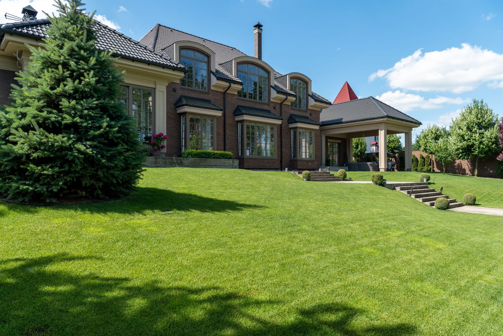
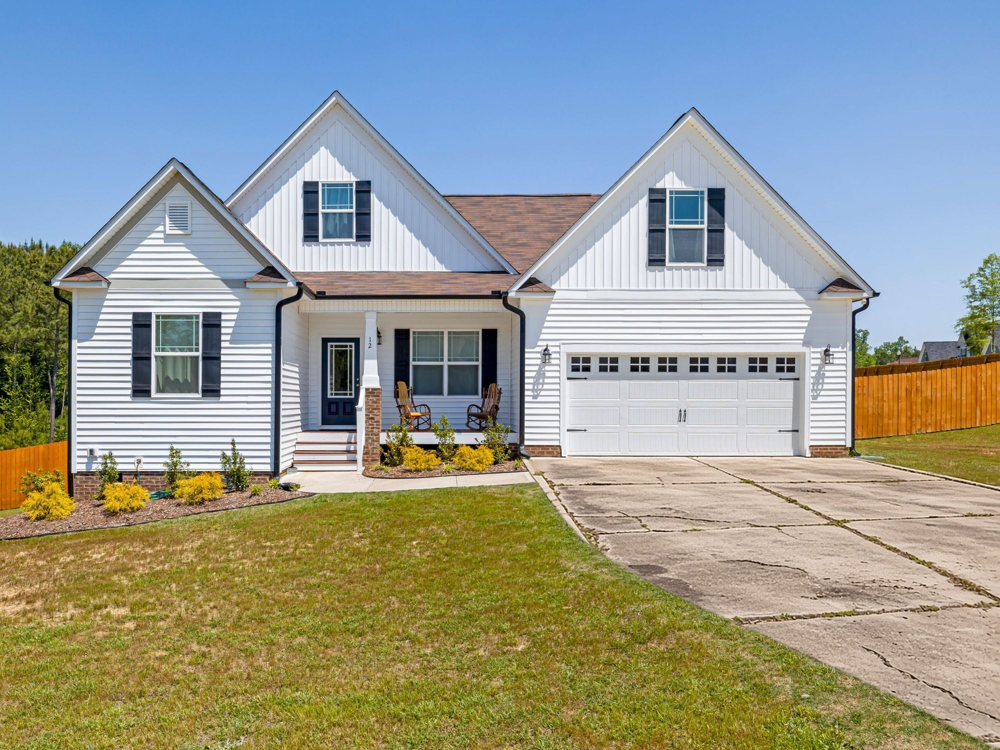
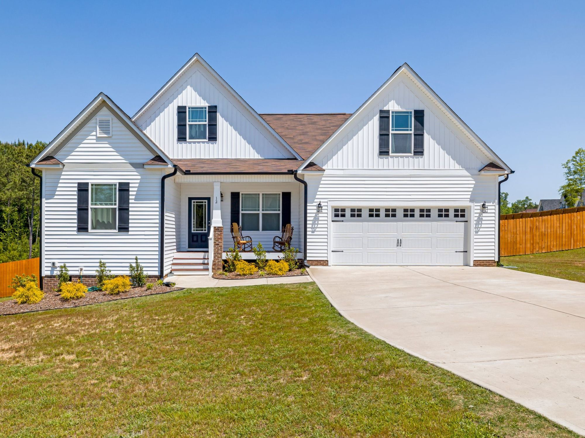
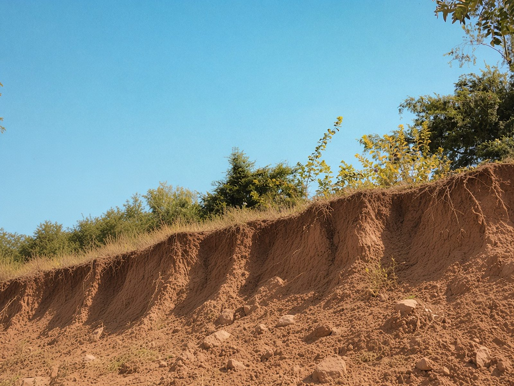
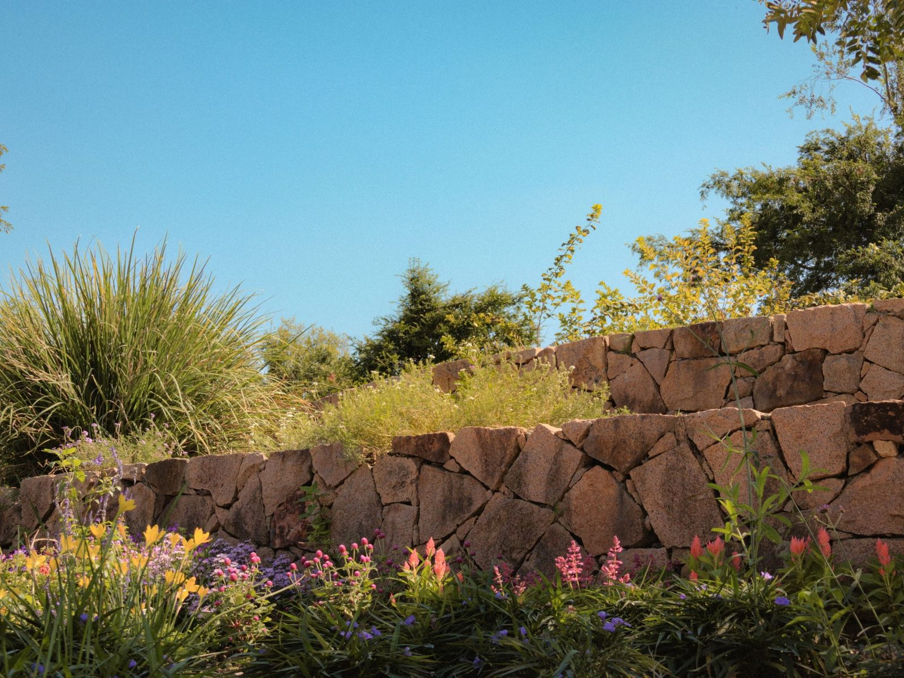
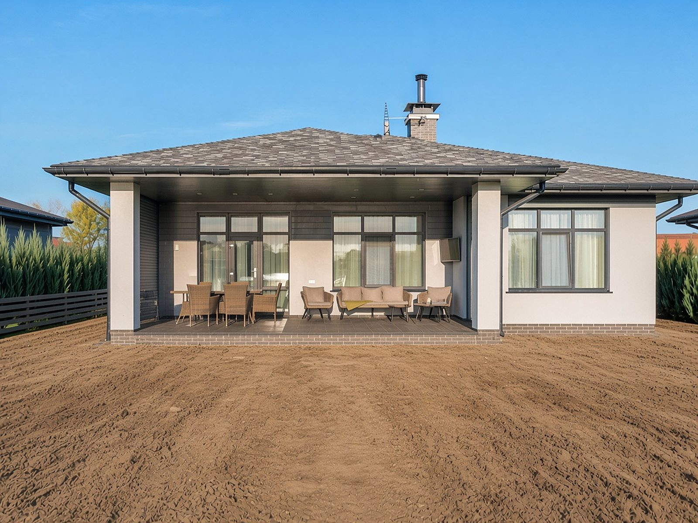
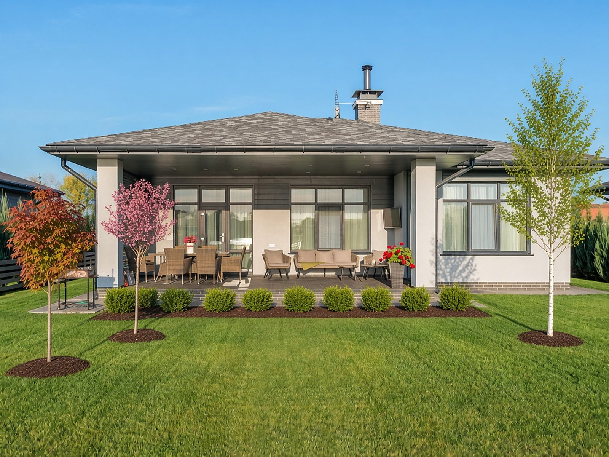

Landscape construction · Wasatch Front
Driveways, retaining walls, and new-build yards, done right the first time. Keep scrolling and watch three tired yards turn into finished ones.
Before and after
Each scene starts with the problem. Keep scrolling to wipe to the finished result.
01/ 03 · Driveways
Cracked slabs, weeds in every joint, and oil stains that greet everyone who pulls up.
Fresh, clean concrete with crisp joints and a smooth finish, built to handle Utah winters.


BeforeAfterDemo images, AI-edited02/ 03 · Retaining walls
Every storm takes a little more of the hill. Loose dirt and rock slide down, and nothing will grow.
A stacked stone wall that holds the grade, with planted terraces you can actually enjoy.


BeforeAfterDemo images, AI-edited03/ 03 · New builds
You got the keys. The yard is still bare dirt, and the HOA deadline is coming.
Graded, sprinklered, and sodded, with trees and shrubs chosen for our climate. Move-in ready.


BeforeAfterDemo images, AI-editedServices
Davis, Salt Lake, Summit, Tooele, and Utah counties.
Free quote
We call back within one business day. Prefer to talk now?
801-856-2909